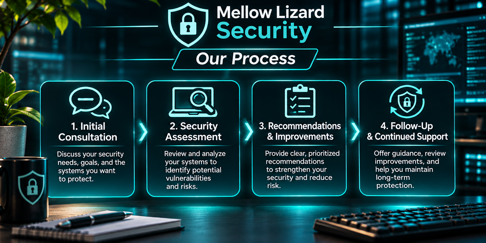

Our Process
How We Protect Your Digital Environment
At Mellow Lizard Security, we believe effective cybersecurity begins with understanding the technology and information our clients need to protect. Our process is designed to make identifying and addressing security risks straightforward and manageable.
From the initial consultation to our final recommendations, we focus on clear communication, responsible assessment practices, and practical improvements that support long-term digital safety.

Step 1: Initial Consultation
Every engagement begins with a conversation about the client's security concerns, technology, and goals. We discuss what systems need protection and which challenges are most important.
This consultation helps us understand the scope of the project and recommend an appropriate cybersecurity service.
Step 2: Security Assessment
Once the scope is established and permission is provided, we conduct an assessment of the agreed-upon systems. This may include reviewing website configurations, network settings, account security, and existing protective measures.
Our assessments are limited to authorized systems and focus on identifying potential weaknesses without unnecessarily disrupting normal operations.
Step 3: Recommendations and Improvements
After completing the assessment, we organize our findings and explain the identified security risks. We prioritize recommendations based on their importance and potential impact.
These recommendations may include software updates, stronger authentication, improved access controls, and changes to network configurations.
Step 4: Follow-Up and Continued Support
Cybersecurity is an ongoing responsibility. After delivering our recommendations, we offer follow-up guidance to help clients understand and maintain their security improvements.
We encourage regular reviews, security awareness, and the development of safer technology habits to reduce future risks.
Find Your Security Solution
Not sure which cybersecurity service is right for you? Select the security concerns that apply to your situation, and our interactive tool will suggest services that may help.
You can select multiple concerns to receive more than one recommendation. This tool provides general guidance and does not replace a professional security assessment.
Your Recommended Security Services
Begin Your Security Journey
Whether you are concerned about a personal website or a growing business network, Mellow Lizard Security can help you understand your options for improving digital protection.
Contact us to discuss your security needs and learn more about scheduling an initial consultation.